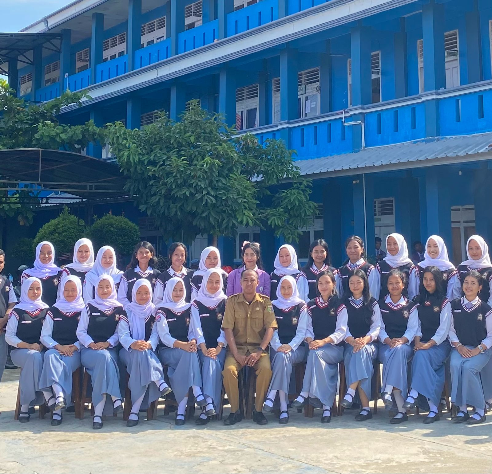

Memasuki jenjang Sekolah Menengah Atas (SMA) merupakan periode eksplorasi diri dan pengembangan minat yang sangat bermakna bagi saya. Selama masa SMA, saya aktif mengasah jiwa kepemimpinan dan kerja sama tim dengan menjadi bagian dari organisasi intra sekolah, yaitu OSIS. Melalui organisasi ini, saya belajar banyak mengenai tanggung jawab, manajemen waktu, serta etika kerja kelompok dalam menyusun berbagai kegiatan sekolah.
Selain aktif di organisasi, saya juga menyalurkan passion saya di bidang non-akademik dengan mengikuti ekstrakurikuler Seni Musik. Di sini, saya tidak hanya belajar mengasah kemampuan bermusik, tetapi juga aktif mewakili sekolah dalam berbagai ajang kompetisi bergengsi, baik dalam perlombaan O2SN maupun FLS2N. Pengalaman berkompetisi ini membentuk mentalitas yang kuat, disiplin, dan semangat pantang menyerah dalam diri saya.